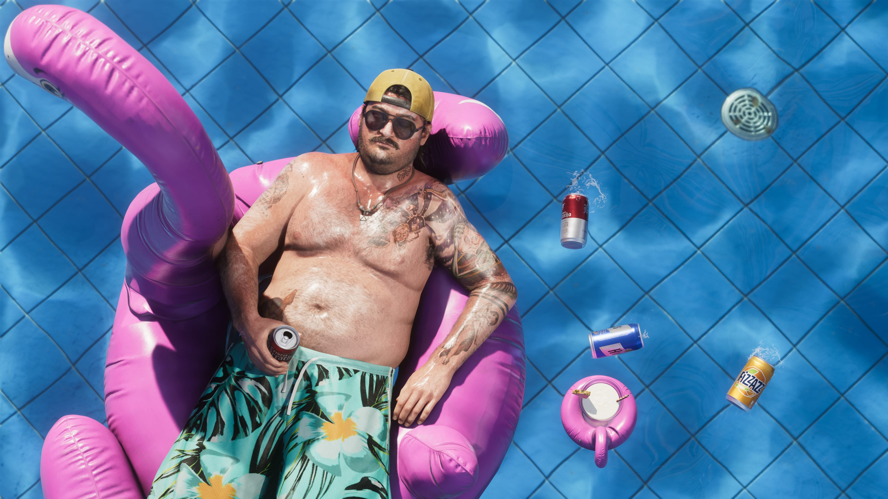
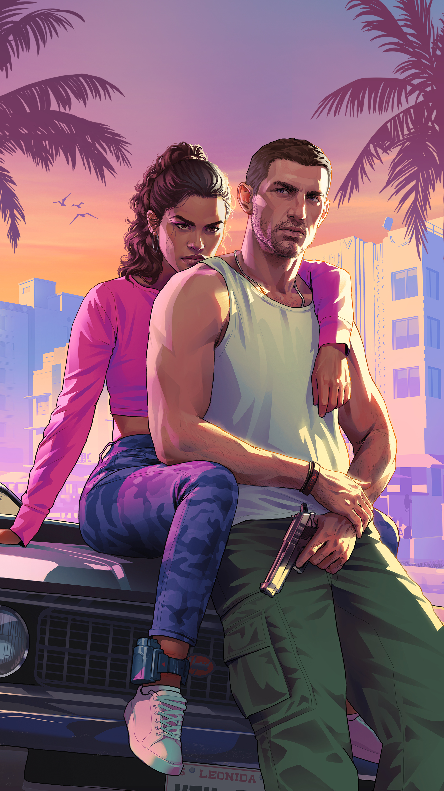
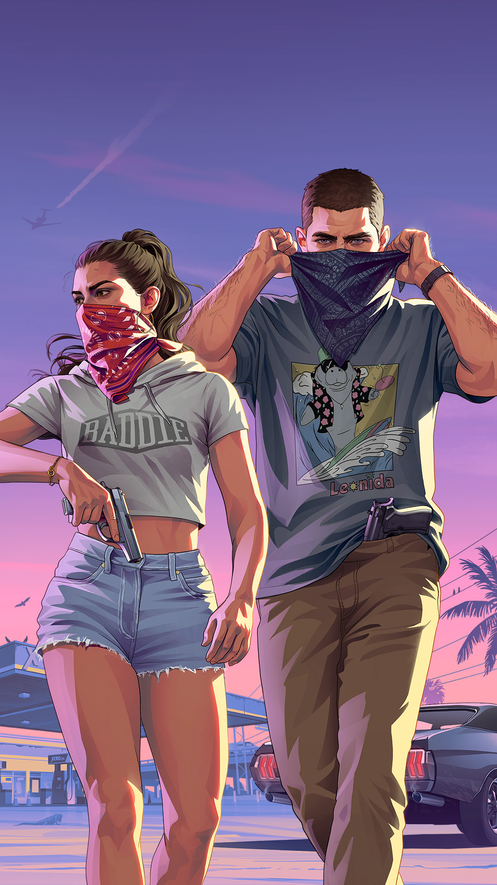
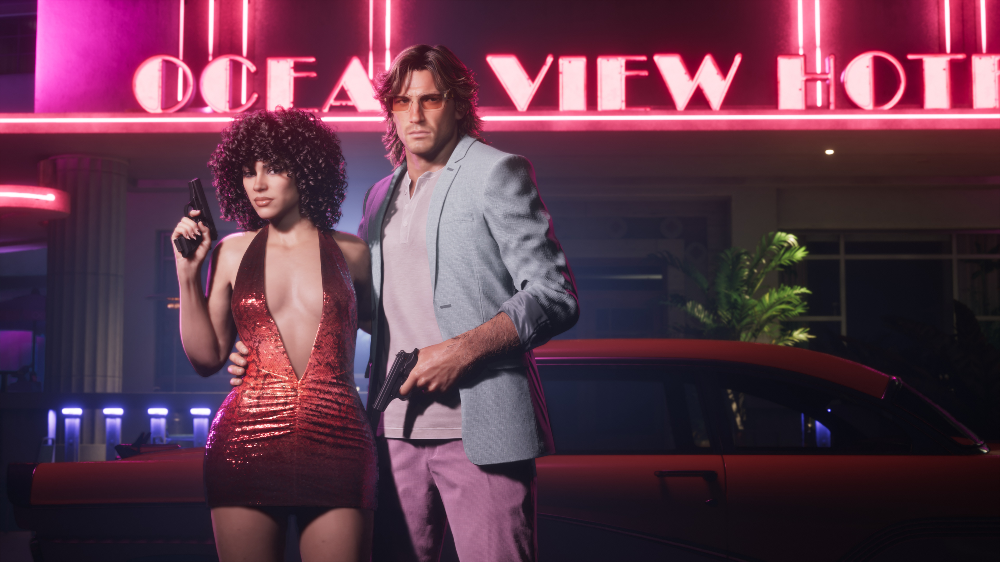

01 / LATIN
COCOTEO
Modern Latin • Sunsets and city lights
THE SOUND OF LEONIDA
From late-night radio to the tracks that define Vice City. Tune in and find your frequency.
EXPLORE THE SOUND ↘01 / RADIO
Turn up the volume. Explore a selection of fictional radio stations inspired by the varied sounds of the state—from sun-soaked Latin rhythms to back-road country and late-night electronic beats.
FIND YOUR FREQUENCY
Modern Latin • Sunsets and city lights

Renegade country • Dusty highways
Amapiano • African classics • 3-step

Heavy metal for the open road

Pop classics and guaranteed grooves

Southern hospitality and rap essentials